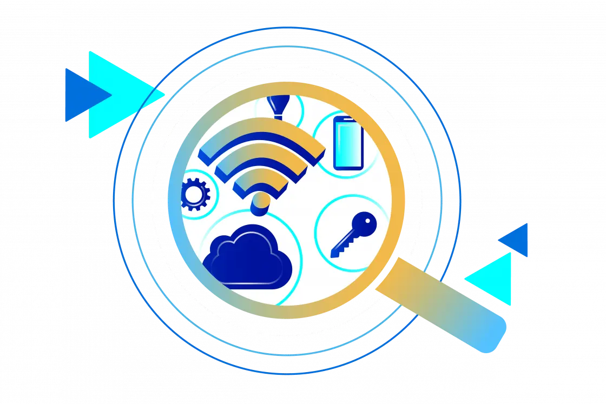

Ventajas, Desventajas y Desafíos del IoT
El Internet de las Cosas (IoT) representa una de las tecnologías más revolucionarias de nuestra era. Sin embargo, como toda tecnología, presenta tanto beneficios como retos importantes que deben ser considerados.
VENTAJAS DEL IoT
AUTOMATIZACIÓN DE TAREAS
Los dispositivos IoT pueden actuar sin intervención humana, lo que reduce el esfuerzo y el tiempo dedicado a tareas repetitivas.
MONITOREO EN TIEMPO REAL
Permite supervisar procesos, condiciones ambientales o el estado de una persona o máquina al instante.
MEJORA DE LA EFICIENCIA
Al optimizar recursos como energía, agua y tiempo, el IoT permite reducir costos operativos.
TOMA DE DECISIONES BASADA EN DATOS
Los datos recolectados ayudan a identificar patrones y tomar decisiones más inteligentes y rápidas.
MEJORA DE LA CALIDAD DE VIDA
Facilita la vida diaria en hogares inteligentes, en el cuidado de la salud, en la educación, y más.
Desventajas del IoT
PRIVACIDAD DE LOS DATOS
Al recolectar información personal y ambiental, los dispositivos IoT pueden comprometer la privacidad de los usuarios.
RIESGO DE SEGURIDAD
Si no están bien protegidos, los dispositivos pueden ser vulnerables a ciberataques o manipulación externa.
DEPENDENCIA DE INTERNET Y ENERGÍA
La mayoría de los sistemas IoT necesitan una conexión constante a internet y alimentación eléctrica.
COSTOS INICIALES ELEVADOS
Aunque a largo plazo son rentables, la instalación de dispositivos IoT puede requerir una inversión significativa.
COMPLEJIDAD TÉCNICA
Requiere conocimientos de redes, programación y configuración, lo cual puede ser una barrera para usuarios no técnicos.
Desafíos actuales del IoT
ESTÁNDARES DE INTEROPERABILIDAD
No todos los dispositivos usan los mismos protocolos, lo que dificulta la integración entre marcas distintas.
SEGURIDAD Y PROTECCIÓN CONTRA AMENAZAS
Es necesario implementar cifrado, autenticación y actualizaciones constantes para evitar vulnerabilidades.
GESTIÓN Y ALMACENAMIENTO DE VOLÚMENES DE DATOS
El IoT genera datos constantemente, y se necesita infraestructura para almacenarlos y analizarlos.
CONSUMO ENERGÉTICO
Muchos dispositivos IoT deben funcionar las 24 horas. Diseñar hardware eficiente y energéticamente sostenible es fundamental.
REGULACIÓN Y LEGISLACIÓN
Aún existen vacíos legales sobre el uso de los datos personales y la responsabilidad en caso de fallos del sistema.
¿SABIAS QUE...?
En 2025 se estima que habrá más de 30 mil millones de dispositivos IoT activos en todo el mundo. Este crecimiento rápido exige soluciones cada vez más seguras, sostenibles y universales.